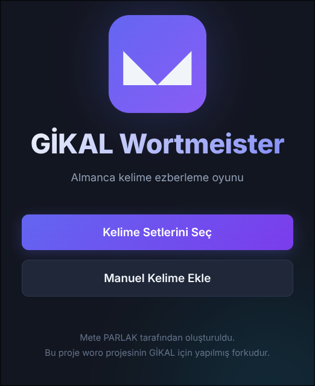

I created a word memorization app to help people learn foreign language vocabulary faster and more effectively. Woro is compatible with every language because users add words manually. GİKAL Wortmeister, on the other hand, is German-focused—its words come from our school's textbooks. While you can also add words manually, Woro is the best option if you prefer a minimalist approach.
I built both GİKAL Wortmeister and Woro using the Rust programming language. GİKAL Wortmeister is a fork of Woro, meaning I developed Wortmeister using Woro as the foundation. Both applications use:
Saved words are stored in a "words_data.json" file. The apps feature three screens: AddWords, Game, and End. Both foreign and translation words are stored as strings.
If you're using this version, you're likely a student at my school (Selam 👋). Two options are available: Hazırlık (Preparation) and 9-10.Sınıf (9th-10th Grade). Select your grade to access the unit selection screen, then choose the unit you want to study. The app will present random words from your chosen grade, and you'll enter their Turkish translations.
The game features 5 levels. Each correct answer advances a word to the next level, while each incorrect answer moves it back one level. Your goal is to reach level 5 for all words. Although it takes time, with dedication and persistence, you'll master all vocabulary by the time they reach level 5. An end screen celebrates your achievement upon completion. Note: You can add words manually in any language, but this version primarily focuses on textbook vocabulary.
This version is for general use. Start by entering the words you want to learn along with their foreign equivalents and translations in your language. You can also enter them in reverse order if you want Woro to display the translation in your language and ask for the foreign meaning. After confirming your entries, you'll proceed to the game screen.
Woro will present random words from your list. Each correct answer advances the word to the next level, while each incorrect answer moves it back one level. Your goal is to reach level 5 for all words. You'll be taken to the end screen once you achieve this goal.
Through this project, I learned how to parse .txt files in Rust, select random items, implement basic egui functionality, and apply fundamental Rust programming concepts.

The previous version of Wortmeister was only available for Windows and Linux computers as a desktop application. I decided to address this limitation by converting it into a web-based program.
I used Rust as the backend language to load word sets, prepare the port, and verify answers. For the frontend, I used the HTML + CSS + JavaScript trio: HTML provides the website's content, CSS handles the design and appearance, and JavaScript makes the website interactive and functional.
I created many functions in Rust to improve code readability. The CSS code ended up longer than anticipated, but it accomplishes its purpose effectively (which is the point, right? 😉). JavaScript primarily sends user commands to the Rust backend.
This was my first experience building a website with a backend, so the most valuable lesson was learning how to enable different programming languages to communicate with each other through APIs.
After days of debugging and deploying, I finally deployed the website successfully. Here is the URL for those who want to try:
Wortmeister